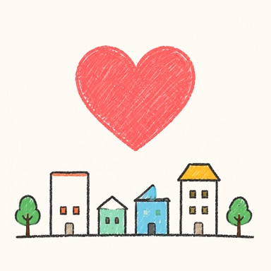

OshiMachi
Find the town
you’d call home.
Rate each town you visit by how much you'd want to live there, and a picture of what you actually look for in a place starts to form. Map, calendar, a wishlist of towns to visit, commute times — a private notebook for your towns. No account, no ads.
iOS 18.0 or later / iPhone
Four app screens. 1. The home ranking — “Ranked by how much you'd want to live there.” 2. The map — “Favorites as gold hearts. No location permission.” 3. The town report — “A year of towns, summed up (Pro).” 4. The wishlist — “Wish list places count down to the day.”
Six tools for finding your town
-
Ranked by how much you'd live there
Give a town one to five stars for how much you'd want to live there, and your home screen becomes a ranking. Once you have two, the top one gets a poster — with a “Certified” stamp if it has four stars or more. The stamp also shows on the town's detail screen and its share image.
-
Rate on your own criteria
Four criteria come set up: transit, safety, comfort, and food & dining. Delete the ones you don't care about, or add your own — rent, quietness, whatever matters to you. Free covers four in total, and these four already fill it — delete one to make room.
-
See them on a map
Towns you've visited appear as pins — a gold heart at four stars or more, a star pin otherwise. Towns you want to visit are green pins. Seeing them laid out geographically tells you something a list can't.
-
Line up the ones you haven't visited
Add towns you haven't been to yet, with a planned date. You get a countdown to the day, and after the visit it carries straight over into a town record.
-
Filter by commute
Set your workplace and each town shows a driving time. For trains, check Apple Maps and note the time yourself — either one can then be used as a filter.
-
Look back at the pattern
Reports cover your rating tendencies, the areas you visit most, and a year in review — the full versions are a Pro feature. Sharing an individual town as a single card image is free.
Free covers 5 towns, 5 wishlist places, 1 photo per town, 4 criteria, 4 tags, and 1 workplace. Pro removes those limits and adds full reports, appearance switching (dark and automatic), and JSON export and import.
Your towns stay on your iPhone
Town records, ratings, notes, and photos are stored only on your device. No account is required, and the app never asks for location (GPS) permission. We measure anonymous usage to help improve the app, but never town names, notes, or the photos themselves. See the Privacy Policy for details.
Put into words why you love that town.
Common questions are answered on the support page. Contact: tempuraapps.support@gmail.com